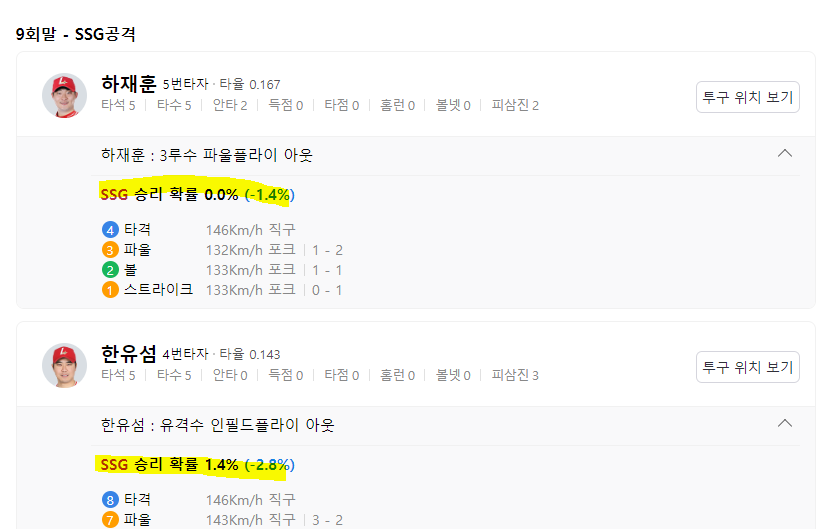

네이버 야구 중계 wpa 크롤링

네이버 문자 중계에 wpa가 생겨서 드랲에 wpa를 쓰고 싶어졌다
처음 페이지를 띄우면 9회에 있고
1회부터 하나씩 클릭해서 크롤링.
타자 기록은 크롤링으로 해결되는데
해당 타자를 상대한 투수의 기록은 남기지 않고 있어서 먼저 타자 크롤링을 순서대로 쭉 하고 난 뒤,

투수 기록 중에 상대한 타자 숫자가 있어서 해당 숫자만큼 투수에게 배정하여 sum을 한 후 음수/양수 반전을 시키기로 결정.
타자/투수 기록 크롤링
#-*- encoding: utf-8 -*-
from html_table_parser import parser_functions as parser
from selenium import webdriver
from selenium import webdriver
from selenium.webdriver.chrome.service import Service as ChromeService
from selenium.webdriver.chrome.options import Options as ChromeOptions
from webdriver_manager.chrome import ChromeDriverManager
options = ChromeOptions()
from selenium.webdriver.common.by import By
from selenium.webdriver.support.ui import WebDriverWait
from selenium.webdriver.support import expected_conditions as EC
from selenium.webdriver.support.ui import Select
import collections
if not hasattr(collections, 'Callable'):
collections.Callable = collections.abc.Callable
import pandas as pd
from bs4 import BeautifulSoup as bs
import requests
import time
import re
# 경고 off
# 생일 붙이는 부분에서 원본 파일에 값을 할당하는데 경고 발생. 무시해도 되니까 꺼둠.
pd.set_option('mode.chained_assignment', None)
#### 먼저 투수 / 타자 기록 크롤링 ####
#0. 날짜 지정
game_day = input('알고 싶은 날짜 입력(YYYYMMDD) : ')
year = game_day[:4]
month = game_day[4:6]
day = game_day[6:]
date_num = year+'-'+month+'-'+day
# 크롬 드라이버 최신 버전 설정
service = ChromeService(executable_path=ChromeDriverManager().install())
# chrome driver
driver = webdriver.Chrome(service=service, options=options)
#1. 날짜 선택
kbo_url = 'https://www.koreabaseball.com/Schedule/GameCenter/Main.aspx'
driver.get(kbo_url)
#1-1. kbo 홈페이지에서 달력 버튼 누르기
calender_button = WebDriverWait(driver,10).until(
EC.element_to_be_clickable((By.XPATH,'//*[@id="contents"]/div[2]/div/img'))
)
calender_button.click()
#1-2. 달력에서 설정한 연도, 월, 일 누르기
year_select=Select(driver.find_element(By.XPATH,'//*[@id="ui-datepicker-div"]/div/div/select[2]'))
year_select.select_by_value(year)
month_select=Select(driver.find_element(By.XPATH, '//*[@id="ui-datepicker-div"]/div/div/select[1]'))
month_select.select_by_value(str(int(month)-1))
if int(day)>9:
day = day
if int(day) <10:
day = str(day)
day = day[1:]
day_pick = WebDriverWait(driver,10).until(
EC.element_to_be_clickable((By.LINK_TEXT,f'{day}'))
)
day_pick.click()
#1-3. 그 날 진행된 게임 결과 정리
kbo_html = driver.page_source
kbo_soup = bs(kbo_html, 'lxml')
today_game = kbo_soup.find_all('li', class_ =re.compile('game-cont'))
total_game_list=[]
for info in today_game:
g_id = info.attrs['g_id']
clss_info= info.attrs['class']
total_game_list.append((g_id,clss_info))
df_total_game = pd.DataFrame(total_game_list)
df_total_game.columns=['g_id','status']
game_count = len(today_game)
driver.quit()
#2. 네이버 기록 크롤링
df_etc_crawl = pd.DataFrame()
df_bat_crawl = pd.DataFrame()
df_pit_crawl = pd.DataFrame()
for g in range(game_count):
if 'cancel' in str(df_total_game['status'][g]):
continue
elif 'end' in str(df_total_game['status'][g]) :
driver = webdriver.Chrome(service=service, options=options)
url = 'https://m.sports.naver.com/game/'+df_total_game['g_id'][g]+year+'/record'
driver.get(url)
driver.maximize_window()
time.sleep(1)
naver_page_loading = WebDriverWait(driver,10).until(
EC.presence_of_all_elements_located((By.CLASS_NAME,'result_list_group'))
)
naver_html = driver.page_source
naver_soup = bs(naver_html, 'lxml')
#기타 항목
naver_etc = naver_soup.find_all('dd', class_= lambda x : x.startswith('MatchResult_info'))
etc_name_list =[]
for n in naver_etc:
name_list = n.get_text()
etc_name_list.append(name_list)
etc_category_list=[]
etc_category = naver_soup.find_all('dt', class_= lambda x : x.startswith('MatchResult_kind'))
for n in etc_category:
category_list = n.get_text()
etc_category_list.append(category_list)
df_naver_etc = pd.DataFrame(list(zip(etc_category_list, etc_name_list)), columns=['항목','이름'])
df_etc_crawl = pd.concat([df_etc_crawl,df_naver_etc], axis=0, ignore_index=True)
#선수들 player_id 가져오기
naver_a_tag = naver_soup.find_all('a', class_= lambda x : str(x).startswith('PlayerRecord_player_info'))
player_id_list=[]
for p in naver_a_tag:
href = p.get('href')
if 'playerId' in str(href):
player_id = re.sub(r'[^0-9]', '', href)
player_id_list.append(int(player_id))
#선수들 이름 가져오기
naver_span_tag = naver_soup.find_all('span', class_= lambda x : str(x).startswith('PlayerRecord_name'))
name_list=[]
for p in naver_span_tag:
p_name = p.get_text()
name_list.append(p_name)
df_info_naver = pd.DataFrame(list(zip(player_id_list,name_list)),columns=['playerid','name'])
#타자, 투수 기록
df_naver_bat = pd.DataFrame()
df_naver_pit = pd.DataFrame()
#기록 가져오기
for r in range(4):
if r<2:
if naver_soup.find('button',lambda x: str(x).startswith('PlayerRecord_button_next')):
play_info = naver_soup.find_all('table', class_=lambda x : str(x).startswith('PlayerRecord_record_table'))[r]
play_table = parser.make2d(play_info)
df = pd.DataFrame(play_table[1:-1], columns=None)
df1 = df.iloc[:,1:]
next_inning_button = WebDriverWait(driver,10).until(
EC.element_to_be_clickable((By.CLASS_NAME,'PlayerRecord_button_next__31NYw'))
)
next_inning_button.click()
naver_html = driver.page_source
naver_soup = bs(naver_html, 'lxml')
play_info = naver_soup.find_all('table', class_=lambda x : str(x).startswith('PlayerRecord_record_table'))[r]
play_table = parser.make2d(play_info)
df = pd.DataFrame(play_table[1:-1], columns=None)
df = df.iloc[:,1:]
last_inning = int(play_table[0][-1])
if last_inning==12:
df2=df.iloc[:,-3:]
if last_inning == 11:
df2=df.iloc[:,-2:]
if last_inning == 10:
df2=df.iloc[:,-1:]
df = pd.concat([df1,df2],axis=1, ignore_index=True)
else:
play_info = naver_soup.find_all('table', class_=lambda x : str(x).startswith('PlayerRecord_record_table'))[r]
play_table = parser.make2d(play_info)
df = pd.DataFrame(play_table[1:-1], columns=None)
df = df.iloc[:,1:]
count = len(df)
df_info = df_info_naver[:count]
df=pd.concat([df_info,df], axis=1,ignore_index=True)
df_naver_bat=pd.concat([df_naver_bat, df], axis=0,ignore_index=True)
if r>=2:
play_info = naver_soup.find_all('table', class_=lambda x : str(x).startswith('PlayerRecord_record_table'))[r]
play_table = parser.make2d(play_info)
df = pd.DataFrame(play_table[1:-1], columns=None)
df = df.iloc[:,1:]
df.insert(0,'구분', ['선발' if n==0 else '중계' for n in range(len(df))])
count = len(df)
df_info = df_info_naver[:count]
df=pd.concat([df_info,df], axis=1,ignore_index=True)
df_naver_pit=pd.concat([df_naver_pit, df], axis=0,ignore_index=True)
df_info_naver = df_info_naver[count:].reset_index(drop=True)
else:
continue
df_bat_crawl = pd.concat([df_bat_crawl, df_naver_bat], axis=0,ignore_index=True)
df_pit_crawl = pd.concat([df_pit_crawl, df_naver_pit], axis=0,ignore_index=True)
driver.quit()
df_bat_crawl.fillna("")
col_len = len(df_bat_crawl.columns)
if col_len==22:
df_bat_crawl.columns=['player_id','이름','타수','득점','안타','타점','홈런','볼넷','삼진','타율','1','2','3','4','5','6','7','8','9','10','11','12']
if col_len==21:
df_bat_crawl.columns=['player_id','이름','타수','득점','안타','타점','홈런','볼넷','삼진','타율','1','2','3','4','5','6','7','8','9','10','11']
if col_len==20:
df_bat_crawl.columns=['player_id','이름','타수','득점','안타','타점','홈런','볼넷','삼진','타율','1','2','3','4','5','6','7','8','9','10']
if col_len==19:
df_bat_crawl.columns=['player_id','이름','타수','득점','안타','타점','홈런','볼넷','삼진','타율','1','2','3','4','5','6','7','8','9']
df_pit_crawl.columns=['player_id','이름','구분','이닝','피안타','실점','자책','4사구','삼진','피홈런','타자','타수','투구수','경기','승리','패전','세이브','평균자책']
#2-2. 기록 숫자로 변환
df_bat_crawl.iloc[:,2:10] = df_bat_crawl.iloc[:,2:10].apply(pd.to_numeric, errors='ignore')
df_pit_crawl['이닝']=df_pit_crawl['이닝'].str.replace('⅓','1/3')
df_pit_crawl['이닝']=df_pit_crawl['이닝'].str.replace('⅔','2/3')
df_pit_crawl.iloc[:,3:] = df_pit_crawl.iloc[:,3:].apply(pd.to_numeric, errors='ignore')
df_pit_final = df_pit_crawl
#2-3. 한 이닝 두 타석 처리
df_bat_info = df_bat_crawl.iloc[:,0:10]
df_bat_check = df_bat_crawl.iloc[:,10:]
df_second_check = pd.DataFrame()
for i in range(len(df_bat_check.columns)):
col = df_bat_check.iloc[:,i]
new_col = col.str.split('/',expand=True)
col_len = len(new_col.columns)
if col_len ==1:
new_col.columns=[f'{i+1}']
if col_len ==2:
new_col.columns=[f'{i+1}',str(f'{i+1}')+'-2']
if col_len ==3:
new_col.columns=[f'{i+1}',str(f'{i+1}')+'-2',str(f'{i+1}')+'-3']
df_second_check = pd.concat([df_second_check,new_col], axis=1,join='outer')
df_bat_final = pd.concat([df_bat_info, df_second_check],axis=1)
#2-4. 기타 기록 정리
df_etc_crawl['정리'] = df_etc_crawl['이름'].str.replace(r'\(.*?\)', '',regex=True)
df_etc_crawl['정리2'] = df_etc_crawl['정리'].str.replace(r'\d.*?호', '',regex=True)
contetns_name = df_etc_crawl['항목']
contents_data = df_etc_crawl['정리2'].str.split(',',expand=True)
df_etc_contents = pd.concat([contetns_name,contents_data],axis=1)
df_etc_contents = df_etc_contents.set_index('항목')
df_etc_contents_t = df_etc_contents.transpose()
col_list = list(df_etc_contents_t.columns.unique())
df_etc_final=pd.DataFrame()
for c in range(len(col_list)):
c_data = df_etc_contents_t[[col_list[c]]]
c_data_stack = c_data.stack().reset_index(drop=True)
df_stack = pd.DataFrame(c_data_stack)
df_stack.columns=[col_list[c]]
df_etc_final = pd.concat([df_etc_final,df_stack], axis=1,join='outer')
record_all = ['견제사','결승타','도루','도루자','실책','주루사','포일','폭투','홈런','3루타','2루타','병살타']
record_in = list(df_etc_final.columns)
something_new = list(set((record_in))-set(record_all))
for col in something_new:
df_etc_final.drop(columns=[col], inplace=True)
record_in = list(df_etc_final.columns)
record_check = list(set(record_all)-set(record_in))
for record in record_check:
df_etc_final[record]=None
df_etc_final=df_etc_final.reindex(columns=record_all)
이렇게 하면 df_pit_final 이라는 데이터프레임에 아래 정보들이 담기게 된다.
.
wpa 크롤링
#### wpa ####
df_wpa_crawl = pd.DataFrame()
#위 투수, 타자 기록 크롤링과 동일한 순서로 크롤링
for g in range(game_count):
if 'cancel' in str(df_total_game['status'][g]):
continue
elif 'end' in str(df_total_game['status'][g]) :
driver = webdriver.Chrome(service=service, options=options)
url = url = 'https://m.sports.naver.com/game/'+df_total_game['g_id'][g]+year+'/relay'
driver.get(url)
driver.maximize_window()
driver.execute_script("window.scrollTo(0, 700)")
time.sleep(2)
html_ori = driver.page_source
soup_ori = bs(html_ori, 'lxml')
#9회 이상일 수도 있어서 inning_count 필요
inning_count = len(soup_ori.find_all('button',class_='SetTab_button_tab___H3-s eg-flick-panel'))
wpa_record_info=[]
wpa_player_info=[]
count_index=0
inning_index = 0
for i in range(inning_count):
inning_index = inning_index+1
inning_button = WebDriverWait(driver,10).until(
EC.element_to_be_clickable((By.CSS_SELECTOR,
'#content > div > div.Home_main_section__y9jR4 > section.Home_game_panel__97L_8 > div.Home_game_contents__35IMT > div > div.SetTab_tab_list__1HLl0 > div > div > button:nth-child('+f'{i+1}'+')')))
inning_button.click()
time.sleep(1)
html = driver.page_source
soup = bs(html, 'lxml')
naver_player_tag=soup.find_all('div', class_ = 'RelayList_profile_info__2n-fN')
#선수 이름과 player_id 크롤링
for div in naver_player_tag :
count_index=count_index+1
a_tags = div.find_all('a')
for a in a_tags:
index=count_index
name = a.text
href = a.get('href')
player_id = re.sub(r'[^0-9]',"",href)
pair = (inning_index,index,name, player_id)
wpa_player_info.append(pair)
player_num = len(naver_player_tag)
for i in range(player_num):
all_div = soup.find_all('div', class_ = 'RelayList_player_area__2ur0q')
target_div = all_div[i]
# 팀명 추출을 위한 작업
# target_div(선수들 네임태그)에서 두 단계 위로 가면 그 선수가 속한 팀의 공격기록 구간임
# 그 구간 제일 위엔 '8회말 - KT공격' 처럼 이닝과 팀이 써있음
# 거기서 팀이름 떼어온다
temp_1 = target_div.parent
temp_2 = temp_1.parent
temp_3 = temp_2.find('strong', class_ = 'OffenseTitle_title__1LKfI').text
temp_4 = temp_3.split('-')
team_name = temp_4[1].replace('공격', '').strip()
# 기존의 'RelayList_winning_rate__2TnLe' 분기 내에 있던 팀명, pair2 설정 및 추가 로직을 분기 바깥으로 뺐음
wpa_card = target_div.find_all('em', class_= 'RelayList_winning_rate__2TnLe')
record_text=""
try:
record_div = target_div.find_all('div', class_='RelayList_main_info__zGpeF')
for span in record_div:
record_text = span.text
except:
record_text = ""
if len(wpa_card) > 0:
wpa = wpa_card[0].find('span',{'class': lambda x : x.startswith('RelayList_sub_text__1oNA')}).text.replace('(', '').replace(')', '').replace('%p', '')
elif '고의4구' in record_text:
wpa = 0
elif ('대타' not in record_text) and ('대주자' not in record_text) and len(record_text)>1:
wpa=0
else:
wpa = None
pair2 = (team_name,wpa,record_text)
wpa_record_info.append(pair2)
df = pd.DataFrame(wpa_player_info, columns=['inning','index','name', 'player_id'])
df2 = pd.DataFrame(wpa_record_info, columns=['team', 'wpa','record_text'])
df_final = pd.concat([df, df2], axis=1)
df_final = df_final.dropna().reset_index(drop=True)
driver.quit()
df_final['ha'] =''
df_final.at[0,'ha']='home'
for i in range(len(df_final)-1):
if df_final['team'][i+1] == df_final['team'][0]:
df_final.at[i+1,'ha']='home'
else:
df_final.at[i+1,'ha']='away'
df_final = df_final.sort_values(by=(['ha','inning','index']), ascending = [False, True,False])
df_wpa_crawl = pd.concat([df_wpa_crawl, df_final], axis=0,ignore_index=True)
for i in range(len(df_wpa_crawl)):
if '업데이트' in str(df_wpa_crawl['wpa'][i]):
batter_text = str(df_wpa_crawl['name'][i])+' : 대타'
if str(batter_text) in str(df_wpa_crawl['record_text'][i]):
df_wpa_crawl.loc[i,'wpa'] = None
else:
df_wpa_crawl.loc[i,'wpa'] = 0
else:
pass
df_wpa_crawl = df_wpa_crawl.dropna().reset_index(drop=True)
df_wpa_crawl['player_id'] = df_wpa_crawl['player_id'].astype(int)
df_wpa_crawl['wpa'] = df_wpa_crawl['wpa'].astype(float)
for col in df_wpa_crawl.columns:
is_same_as_previous = df_wpa_crawl['name'] == df_wpa_crawl['name'].shift(-1)
duplicate_indices = is_same_as_previous[is_same_as_previous].index
df_wpa_crawl = df_wpa_crawl.drop(duplicate_indices).reset_index(drop=True)
#끝내기 주루사 처리
index_changes = df_wpa_crawl[df_wpa_crawl['team'] != df_wpa_crawl['team'].shift(-1)].index
rows_to_drop=index_changes[df_wpa_crawl.loc[index_changes, 'record_text'].str.contains('실패아웃|견제사')]
df_wpa_crawl = df_wpa_crawl.drop(rows_to_drop)
df_wpa_crawl = df_wpa_crawl.reset_index(drop=True)
#네이버 문자 중계 실수일 경우 처리
filtered_df = df_wpa_crawl[df_wpa_crawl['record_text'].str.contains('투수') & df_wpa_crawl['record_text'].str.contains('교체')
& ~df_wpa_crawl['record_text'].str.contains('자동')]
df_wpa_crawl_filtered =df_wpa_crawl.drop(filtered_df.index).reset_index(drop=True)
import pyautogui
if len(df_wpa_crawl_filtered)==sum(df_pit_final['타자']):
df_wpa_pitcher = df_pit_final[['player_id','이름','구분','타자']]
df_wpa_pitcher['wpa']=0
df_wpa_batter = df_wpa_crawl_filtered
df_wpa_batter['wpa'] = df_wpa_batter['wpa']*10
for i in range(len(df_wpa_pitcher)):
bat_count = df_wpa_pitcher['타자'][i]
bat_wpa = sum(df_wpa_crawl_filtered['wpa'][0:bat_count])
if bat_wpa > 0:
pit_wpa = -bat_wpa
else:
pit_wpa = abs(bat_wpa)
df_wpa_pitcher['wpa'][i] = pit_wpa
df_wpa_crawl_filtered = df_wpa_crawl_filtered.drop(index=range(0,bat_count)).reset_index(drop=True)
df_wpa_final = df_wpa_batter.groupby(['player_id','name']).agg({'wpa':'sum'}).reset_index()
temp_pit = df_wpa_pitcher[['player_id','이름','wpa']].rename(columns={'player_id':'player_id','이름':'name','wpa':'wpa'})
df_wpa_batter['wpa'] = df_wpa_batter['wpa'].apply(lambda x: x / 10 if x != 0 else x)
df_wpa_pitcher['wpa'] = df_wpa_pitcher['wpa'].apply(lambda x: x / 10 if x != 0 else x)
df_wpa_final = pd.concat([df_wpa_final,temp_pit], axis=0, ignore_index=True)
df_wpa_final['wpa'] = df_wpa_final['wpa'].apply(lambda x: x / 10 if x != 0 else x)
# 4. 엑셀에 정리
with pd.ExcelWriter(f'{game_day}'+'.xlsx') as writer:
df_bat_final.to_excel(writer, sheet_name='네이버_타격', index=False)
df_pit_final.to_excel(writer, sheet_name='네이버_피칭', index=False)
df_etc_final.to_excel(writer, sheet_name='네이버_기타', index=False)
df_wpa_final.to_excel(writer, sheet_name='wpa_투타합계', index=False)
df_wpa_batter.to_excel(writer, sheet_name='wpa_타자', index=False)
df_wpa_pitcher.to_excel(writer, sheet_name='wpa_투수', index=False)
else:
print('문제발생')
pyautogui.alert('WPA에서 문제 발생')
# 4. 엑셀에 정리
with pd.ExcelWriter(f'{game_day}'+'.xlsx') as writer:
df_bat_final.to_excel(writer, sheet_name='네이버_타격', index=False)
df_pit_final.to_excel(writer, sheet_name='네이버_피칭', index=False)
df_etc_final.to_excel(writer, sheet_name='네이버_기타', index=False)
print("크롤링 완료")
time.sleep(5)
끝내기일 경우 뒷 타자의 player_id 정보는 있는데 타자들 기록 정보가 안 나오는 경우 발생,
그리고 대타로 교체일 경우 len(wpa_card) = 0 이어서 wpa None처리
else:
wpa = None

.
.
고의4구일 경우도 player_id는 있는데 wpa는 없어서 따로 체크 후 wpa=0으로 강제 기입
elif '고의4구' in record_text:
wpa = 0
.
.
루상의 주자가 주루/견제사로 끝날 경우 투수의 “상태 타자 숫자”에 처음 기록이 안 들어가게 된다.
이럴 경우 첫 번째 기록을 날리게 처리
for col in df_wpa_crawl.columns:
is_same_as_previous = df_wpa_crawl['name'] == df_wpa_crawl['name'].shift(-1)
duplicate_indices = is_same_as_previous[is_same_as_previous].index
df_wpa_crawl = df_wpa_crawl.drop(duplicate_indices).reset_index(drop=True)
wpa가 소수점이 있어서
중간에 곱하기 10씩 안 해주면 부동 소수점 이슈 발생
.
.
최종 결과